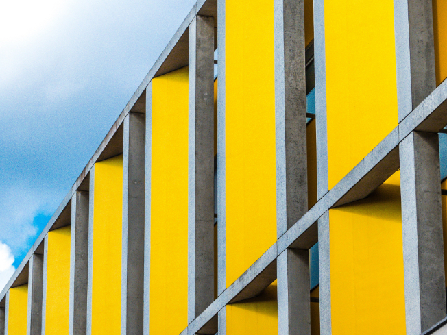

ワクワクするイノベーションをホームページを更新しました。
DAMMY SITEはこういう集団です
DAMMY SITEはボトムアップ型のイノベーション・プロ
ジェクトを自発的に立ち上げ実践する、関西電力グルー
プ社員を中心としたコミュニティです。


- ポイント
- K-hackはボトムアップ型のイノベーション・プロジェクトを自発的に立ち上げ実践する、関西電力グループ社員を中心としたコミュニティです。
- ポイント
- K-hackはボトムアップ型のイノベーション・プロジェクトを自発的に立ち上げ実践する、関西電力グループ社員を中心としたコミュニティです。
- ポイント
- K-hackはボトムアップ型のイノベーション・プロジェクトを自発的に立ち上げ実践する、関西電力グループ社員を中心としたコミュニティです。
失敗を恐れず、
行動しよう。
ダミーダミーダミーダミーダミーダミーダミーダミーダミーダミーダミーダミーダミーダミー
CONCEPT
Our Philosophy

もともと30歳の社員2人が「ワクワクするイノベーションを起こしたい」と周囲に呼びかけ、業務外の自発的な活動として始めました。k-hackは共に切磋琢磨するアクティブな仲間が集っているコミュニティであえい、様々な試みを実践する場です。「新しいことにチャレンジしたい」「アイデアを形にしたい」「ワクワクするイノベーションを起こしたい」という熱意を出発点に、新規事業の開発や既存事業の変革を目指し、さまざまなプロジェクトに取り組んでいます。
PROJECT
Project
ダミーダミーダミーダミーダミーダミーダミーダミーダミーダミーダミーダミーダミーダミー

MEMBER

「物流」と「旅行」を組み合わせた、新しい旅行サービスの事業開発プロジェクト。コンセプトは「届ける、それが旅になる」。例えば、日本人がベトナムに旅行する場合に、日本の製品を欲しがっているベトナム人を検索し、トラベラーが日本からモノを届けてあげる。現地人は、海外でしか買えないモノが手に入り、トラベラーは現地で友達のような交流ができるようになる。「Trapol」は新しい価値観や文化の違いに触れられる、新しい旅行サービスの実現に取り組む。
CONTACT